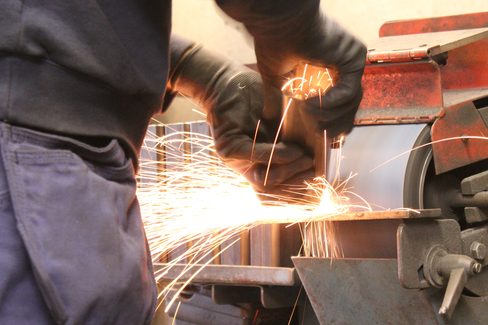

grinding revision 7079
^ Techniques infobox ^^
| image | Grinding illustration.svg |
| designer | |
| date | |
| vitamins | |
| materials | |
| transformations | |
| lifecycles | |
| tools | |
| git | |
| parts | |
| techniques | |
| stl | |
Introduction

Grinding is a type of abrasive machining process which uses grinding wheel as cutting tool.
A wide variety of machines are used for grinding:
- Hand-cranked knife-sharpening stones (grindstones)
- Handheld power tools such as angle grinders and die grinders
- Various kinds of expensive industrial machine tools called grinding machines
- Bench grinders
Milling practice is a large and diverse area of manufacturing and toolmaking. It can produce very fine finishes and very accurate dimensions; yet in mass production contexts it can also rough out large volumes of metal quite rapidly. It is usually better suited to the machining of very hard materials than is "regular" machining (that is, cutting larger chips with cutting tools such as tool bits or milling cutters), and until recent decades it was the only practical way to machine such materials as hardened steels. Compared to "regular" machining, it is usually better suited to taking very shallow cuts, such as reducing a shaft's diameter by half a thousandth of an inch or 12.7 μm.
Grinding is a subset of cutting, as grinding is a true metal-cutting process. Each grain of abrasive functions as a microscopic single-point cutting edge (although of high negative rake angle), and shears a tiny chip that is analogous to what would conventionally be called a "cut" chip (turning, milling, drilling, tapping, etc.)[citation needed]. However, among people who work in the machining fields, the term cutting is often understood to refer to the macroscopic cutting operations, and grinding is often mentally categorized as a "separate" process. This is why the terms are usually used separately in shop-floor practice.
Lapping and sanding are subsets of grinding.